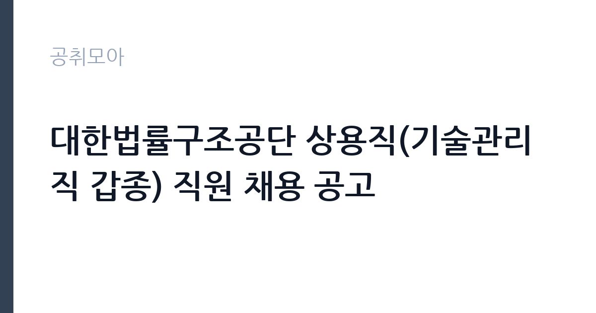

[공공기관] 대한법률구조공단 상용직(기술관리직 갑종) 직원 채용 공고
대한법률구조공단 · 경북 · 마감 2026-11-03 (D-15) · 출처 잡알리오

한눈에 보는 모집 조건
| 기관 | 대한법률구조공단 |
|---|---|
| 공고명 | 대한법률구조공단 상용직(기술관리직 갑종) 직원 채용 공고 |
| 고용형태 | 정규직 |
| 근무지 | 경북 |
| 게시일 | 2026-10-19 |
| 마감일 | 2026-11-03 (D-15) |
지원자격, 이렇게 읽으세요
- 공공기관 채용공시
- 세부 조건은 원문 공고문 확인
응시자격은 명확합니다. 연령은 채용공고일 기준 만 18세 이상 60세 미만이고, 성별·학력·거주지 제한은 없습니다. 필수 요건은 자격증입니다. 에너지관리기능사 이상, 공조냉동기계기능사 이상, 가스기능사 이상 중 하나 이상을 보유해야 합니다. 여기서 '이상'은 산업기사와 기사를 포함한다는 뜻이므로, 상위 자격이 있으면 그대로 인정됩니다. 세 자격 중 어느 것도 없다면 지원 자체가 불가능합니다. 접수 방법도 유의해야 합니다. 이메일 접수만 가능하고 방문이나 우편 접수는 받지 않습니다. 마감 시각이 오후 6시로 정해져 있으니, 발송 후 수신 확인까지 챙기십시오.
이 공고의 포인트
이 자리의 핵심은 상용직이라는 신분입니다. 공단의 상용직은 기간을 정하지 않은 근로계약으로, 시설 관리 업무를 안정적으로 수행하는 직위입니다. 두 번째는 업무의 성격입니다. 법률구조공단 본부 청사의 전기와 보일러, 냉난방기 운전과 소규모 보수 업무를 맡습니다. 사무직이 아니라 기술직이므로 자격증이 곧 경쟁력입니다. 세 번째는 경쟁률입니다. 근무지가 경북 김천이고 기술 자격을 요구해, 수도권 사무직 공고보다 지원자가 적을 가능성이 있습니다. 지방 근무가 가능하고 관련 자격을 가진 지원자에게는 실질적인 기회입니다.
전형은 어떻게 진행되나
전형은 서류전형과 면접전형으로 진행됩니다. 서류에서는 응시자격과 자격증 소지 여부를 확인하고, 면접에서는 시설 관리 실무와 근무 태도를 봅니다. 이메일 접수이므로 제출서류를 하나의 파일로 정리해 보내는 것이 좋습니다. 파일명에 이름과 지원 직무를 넣고, 용량 제한을 넘지 않도록 확인하십시오. 마감 후에는 서류 합격자에게 개별 통보가 이뤄지고, 면접 일정이 안내됩니다. 최종합격 후에는 신원조회와 채용 신체검사가 이어집니다. 공단은 법률구조 업무를 하는 기관이라 신원 확인이 엄격한 편이므로, 제출서류의 기재 내용이 사실과 다르면 불이익을 받을 수 있습니다.
원문에서 확인한 전형 방식
◇ 연령 : 만 18세 이상 60세 미만(채용공고일 기준) ◇ 성별·학력 및 거주지 제한 없음 ◇ 아래 3개 자격증 중 1개 이상의 자격증 소지자 ① 에너지관리기능사 이상(산업기사, 기사 등 상위 자격등급 포함) 또는 ② 공조냉동기계기능사 이상(산업기사, 기사 등 상위 자격등급 포함) 또는 ③ 가스기능사 이상(산업기사, 기사 등 상위 자격등급 포함) 자격증 소지자
이런 분께 추천해요
- 에너지관리·공조냉동·가스 자격증 중 하나를 가진 분 — 자격이 필수 요건입니다
- 경북 김천 본부 근무가 가능한 분 — 근무지가 김천으로 명시돼 있습니다
- 청사 시설 관리 실무를 정규 상용직으로 이어가고 싶은 분
지원 전 체크리스트
- 보유 자격증이 세 가지 중 하나에 해당하는가 — 기능사 이상이면 인정됩니다
- 이메일 접수만 가능하다는 점을 확인했는가 — 방문·우편은 불가입니다
- 마감 시각 2026-11-03 18시를 넘기지 않았는가
- 제출서류를 하나의 파일로 정리하고 파일명 규칙을 지켰는가
모집 일정과 제출 타이밍
마감은 2026년 11월 3일 오후 6시입니다. 공고가 10월 중순에 올라온 만큼 준비 기간은 2주 안팎입니다. 권장 일정은 첫 주에 자격증 사본과 경력증명서를 준비하고, 둘째 주 초에 이력서와 자기소개서를 완성하는 것입니다. 이메일 발송은 마감 이틀 전에 끝내고 수신 확인을 받으십시오. 면접은 서류 합격자에게 개별 통보되며, 기술직 면접은 실무 질문이 중심입니다. 통보 후 일정이 짧을 수 있으니 시설 관리 실무 용어를 미리 정리해 두십시오.
직무 이해하기: 공공기관
대한법률구조공단은 경제적으로 어려운 국민에게 법률 상담과 소송 구조를 제공하는 법무부 산하 기관입니다. 기술관리직 갑종은 공단 본부 청사의 시설물을 관리합니다. 구체적으로는 전기 설비 점검과 운전, 보일러와 냉난방기 운전, 소규모 시설물 보수, 시설 관련 행정 지원이 핵심 업무입니다. 청사에 상주하며 근무하기 때문에, 문제가 생기면 즉시 대응해야 하는 현업 직무입니다. 전기안전관리자 선임 요건과 연결되는 업무가 포함될 수 있어 관련 법령 지식이 도움이 됩니다. 시설 관리 업무는 기록이 중요하므로, 점검 일지와 보수 이력을 정확히 남기는 습관이 필요합니다.
자기소개서 작성 팁
기술직 자기소개서는 자격과 경험을 숫자로 제시하는 것이 핵심입니다. 첫 문단에 보유 자격증과 실무 연수를 적으십시오. 본론에서는 담당했던 설비의 규모와 종류를 구체적으로 쓰는 것이 좋습니다. 예를 들어 몇 평 규모 건물의 전기 설비를 관리했는지, 냉난방기 대수를 몇 대 운전했는지, 연간 보수 건수가 어느 정도였는지를 적으면 실무 감각이 드러납니다. 안전사고 예방 사례도 좋은 소재입니다. 마무리에는 공단 본부 청사의 안정적 시설 운영에 기여하겠다는 의사를 밝히십시오. 감점 요인은 자격증과 무관한 일반 사무 경험만 나열하는 것입니다. 기술직 채용에서는 현장 경험이 가장 중요한 평가 요소입니다.
면접 준비 포인트
면접은 실무 중심입니다. 전기 설비 이상이 발생했을 때 조치 순서, 냉난방기 고장 진단 방법, 안전 작업 절차 같은 질문이 나옵니다. 답할 때는 안전을 최우선으로 두고, 보고 체계를 언급하면 좋습니다. 예를 들어 이상 발견 시 즉시 운전 정지, 관리자 보고, 원인 확인, 복구 후 기록 순으로 설명하는 방식입니다. 법률구조공단이라는 기관의 성격을 이해하고 있는지도 확인될 수 있습니다. 국민을 상대하는 기관이므로, 시설 문제로 방문 민원인이 불편을 겪지 않도록 대응한 경험이 있으면 적극적으로 이야기하십시오.
급여·근무조건 읽는 법
보수는 공단의 상용직 보수 규정에 따라 정해지며, 원문 공고문의 처우 항목에서 확인해야 합니다. 채용정보 사이트의 공단 평균 연봉은 집계 기관에 따라 3,500만원대에서 6,600만원대까지 크게 다르게 나타나 신뢰도가 낮습니다. 기술관리직 갑종은 직종별 보수 등급이 따로 적용되므로, 평균 연봉으로 본인 보수를 추정하기는 어렵습니다. 상용직은 기간의 정함이 없는 근로계약으로, 4대 보험과 퇴직급여가 적용되고 정년까지 근무가 가능합니다. 기본급 외에 수당과 명절휴가비, 복지포인트 같은 항목이 붙는 경우가 많습니다. 정확한 금액과 수당 구성은 공고문과 공단 보수 규정을 확인하십시오.
자주 묻는 질문
- 어떤 자격증이 필요한가요?
에너지관리기능사, 공조냉동기계기능사, 가스기능사 중 하나 이상이면 됩니다. 산업기사와 기사 등 상위 자격도 인정됩니다. - 방문 접수가 가능한가요?
불가능합니다. 이메일 접수만 받으며, 마감은 2026년 11월 3일 오후 6시입니다. - 상용직은 계약직인가요?
기간을 정하지 않은 근로계약을 맺는 상용직입니다. 계약 기간이 정해진 기간제와 달리 정년까지 근무가 가능합니다.
함께 보면 좋은 공고
[공공기관] 2026년 하반기 중소벤처기업진흥공단 체험형 청년인턴(일반) 채용 공고 — 마감 2026-11-03[공공기관] 2026년 제3차 동남권원자력의학원 직원채용 공고 — 마감 2026-11-02[공공기관] 2026년 한국잡월드 정규직 신입(5급) 직원 채용 공고 — 마감 2026-11-04출처: 잡알리오 공개정보를 바탕으로 공취모아가 정리한 안내글입니다. 모집 조건·일정은 변경될 수 있으니 지원 전 반드시 원문 공고문을 확인하세요. 본 글은 정보 제공용이며 합격을 보장하지 않습니다.